Skills
Click a button to view more details about each skill.
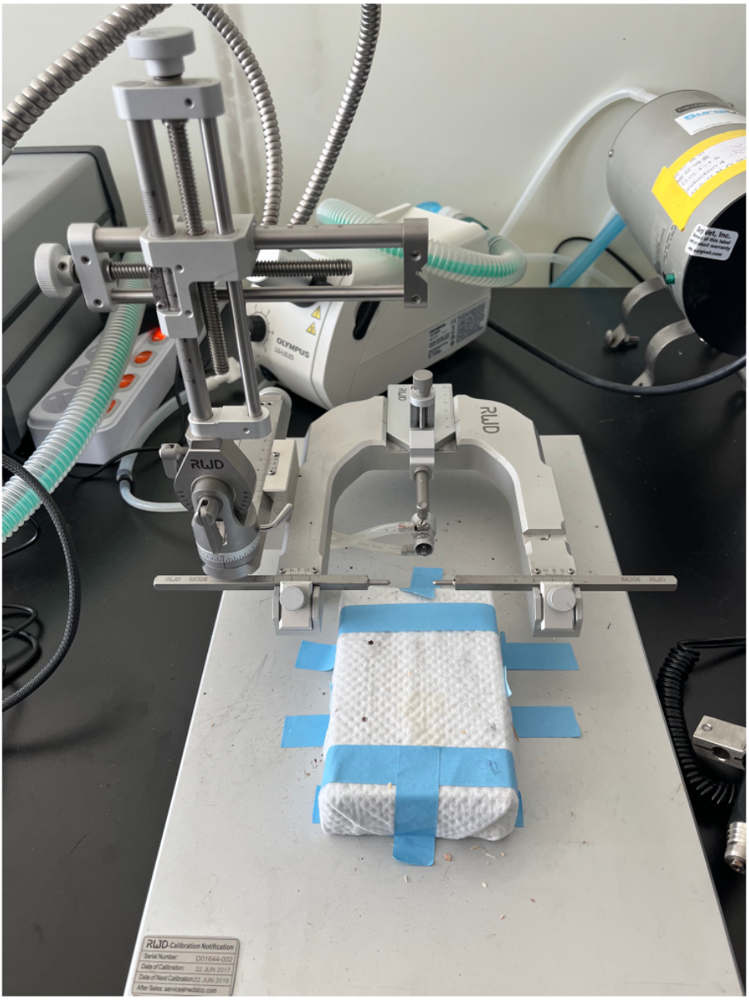
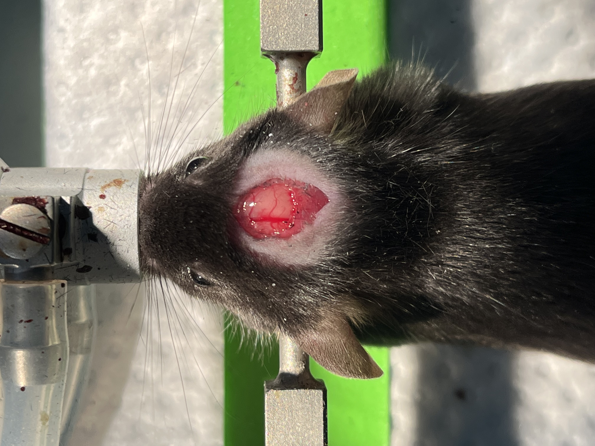
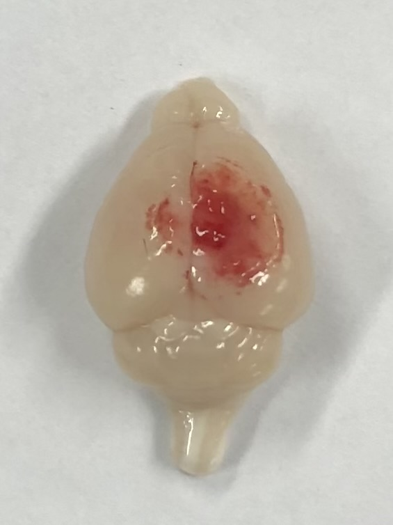
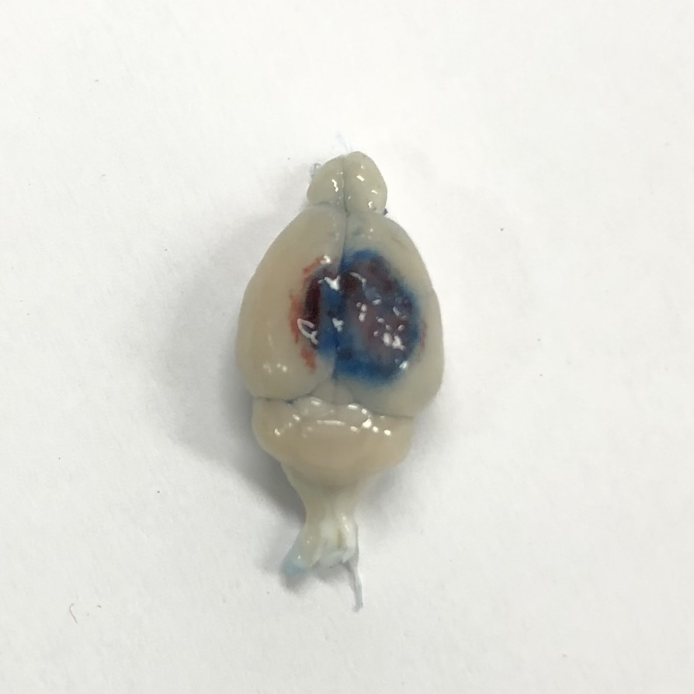
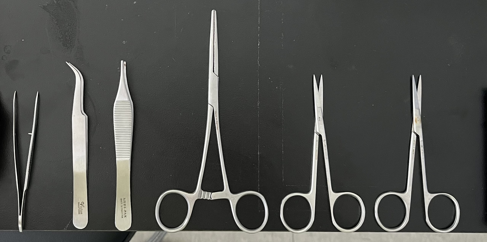
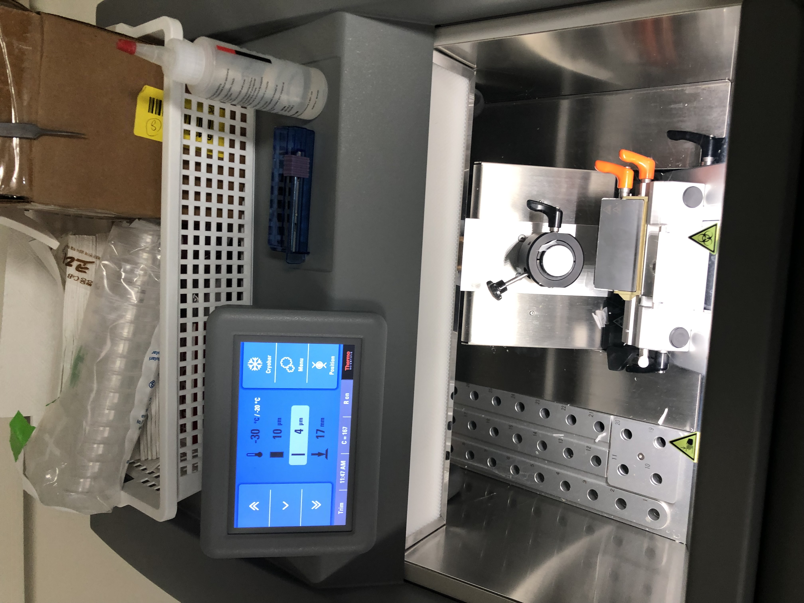
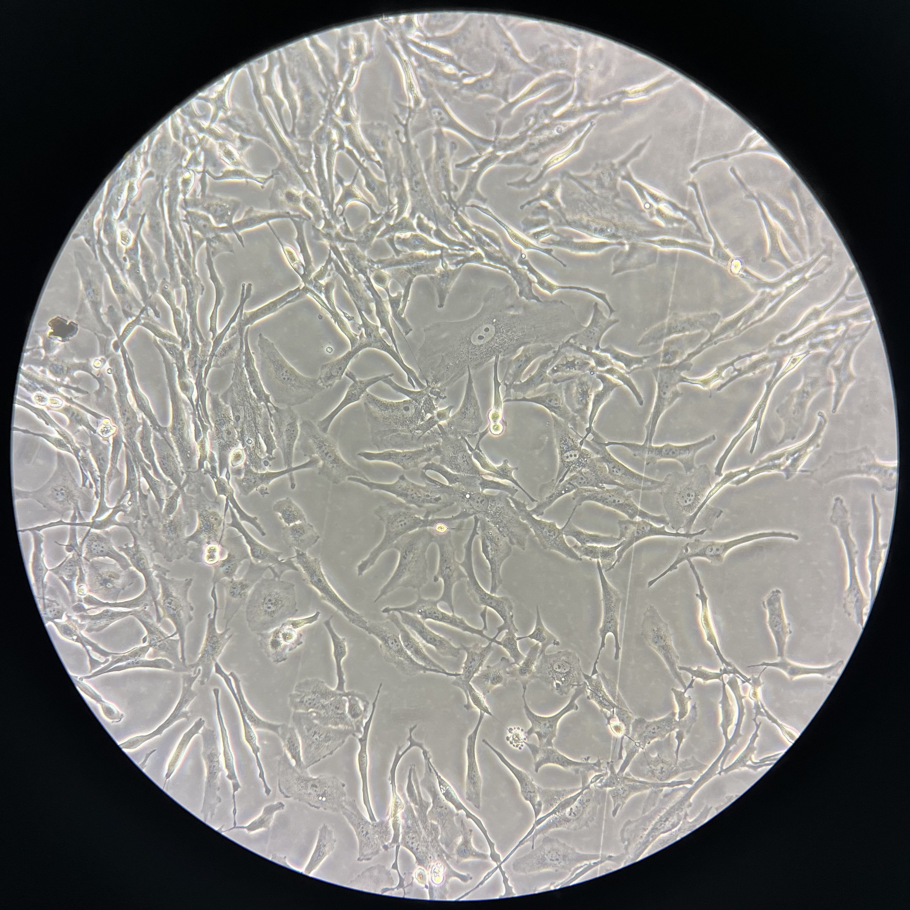

1. Experimental Neurobiology
in vivo
in vitro
2. Quantitative Imaging & Molecular Readout
Imaging-based analysis
protein-level assays
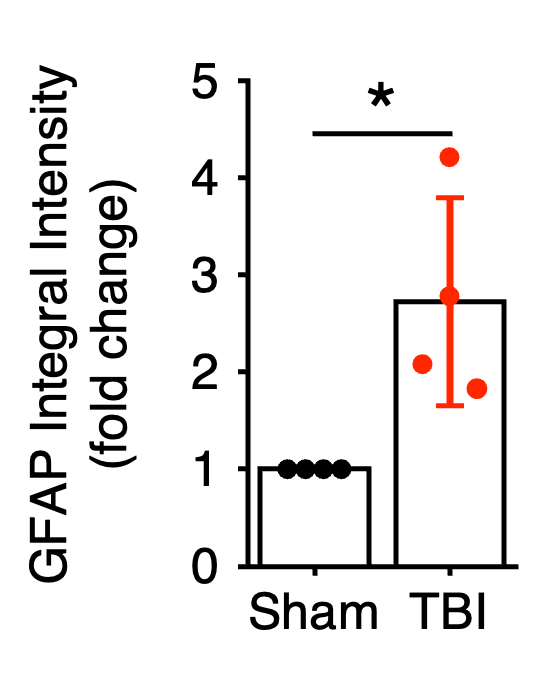
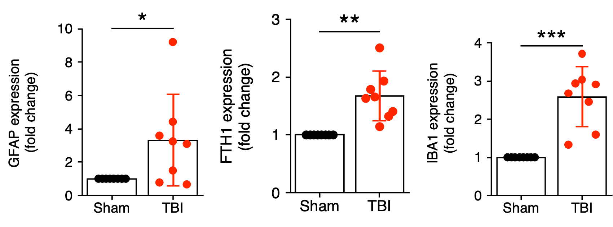
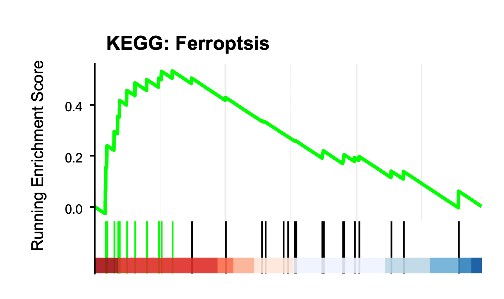
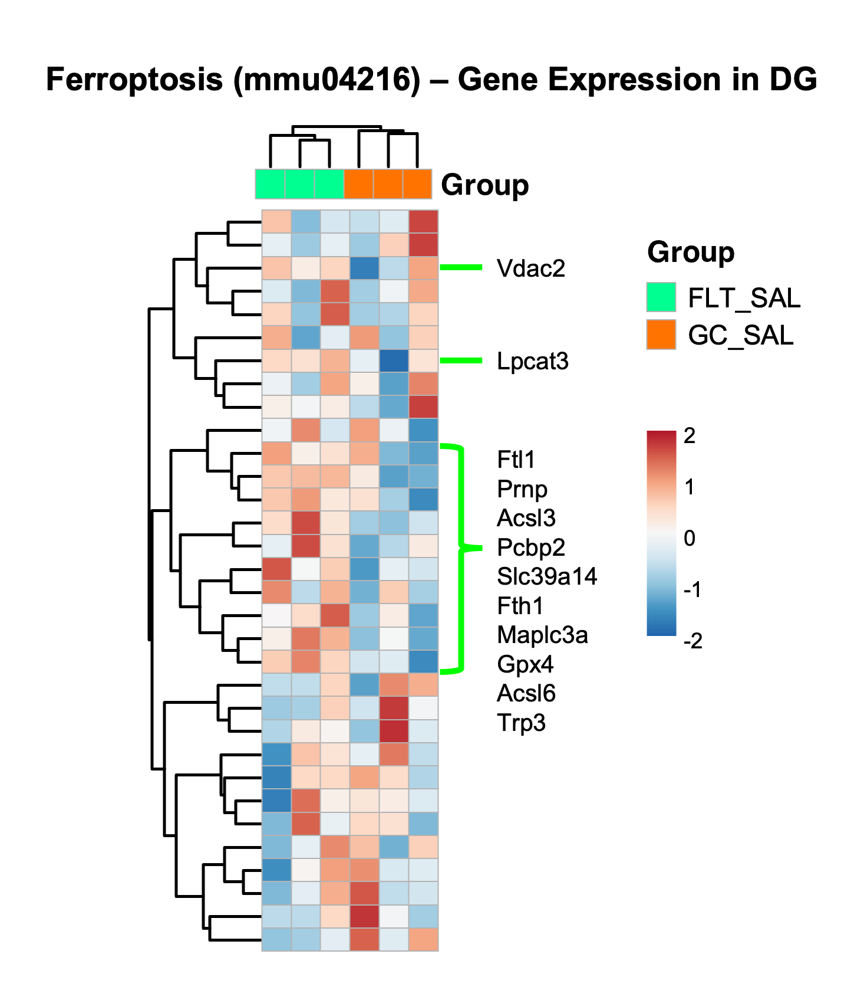
 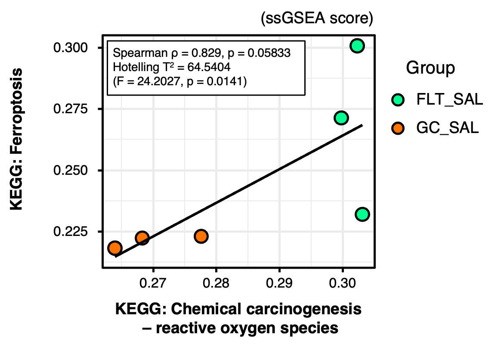
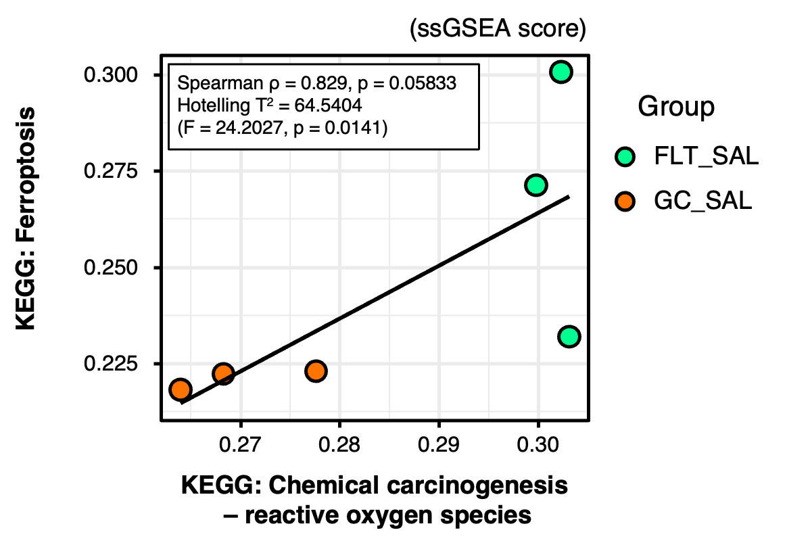
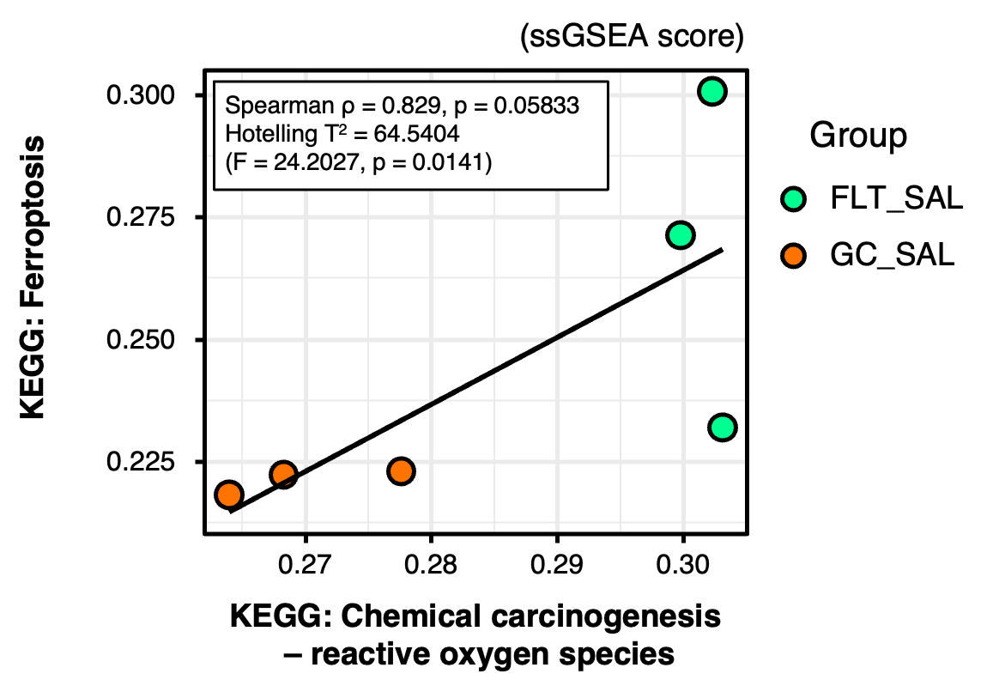